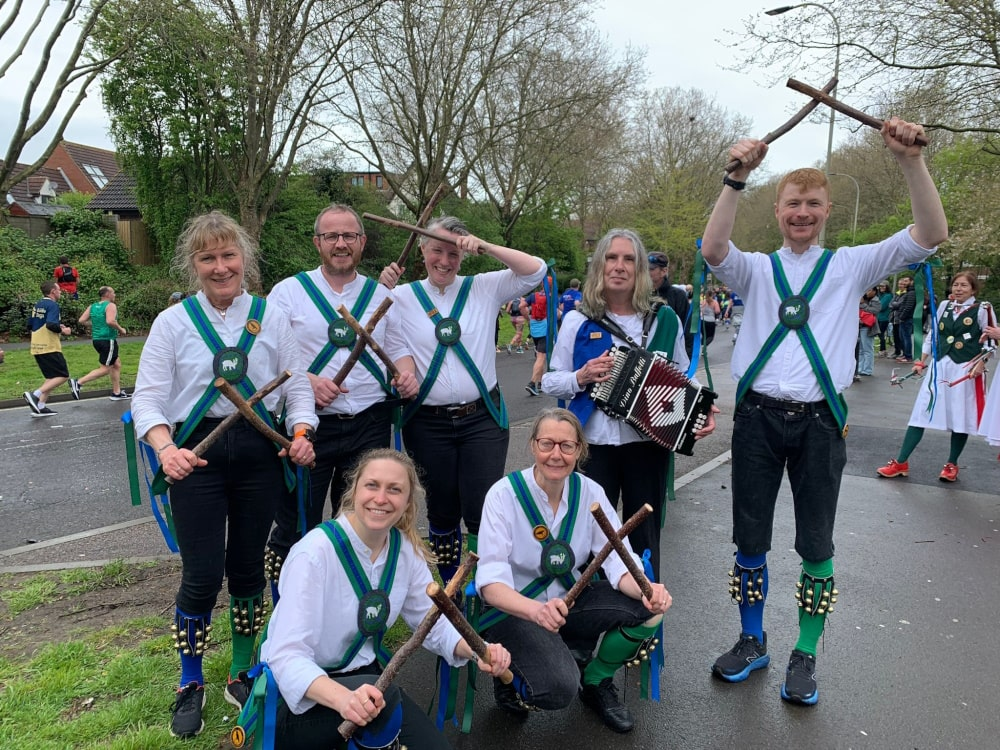
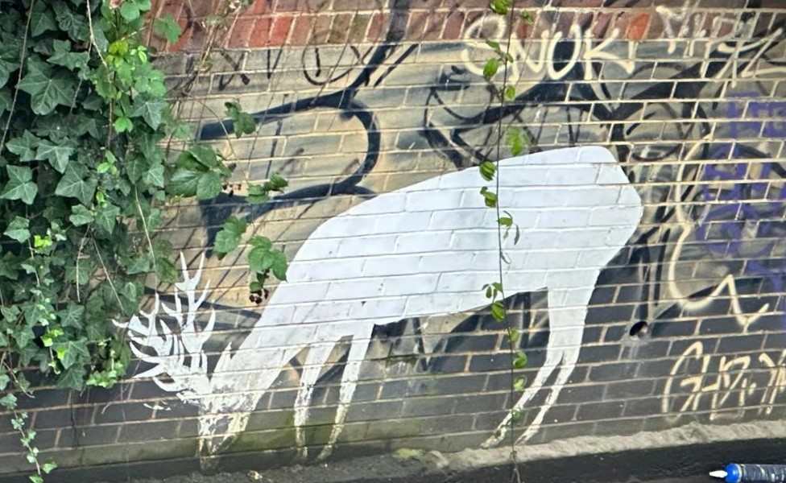
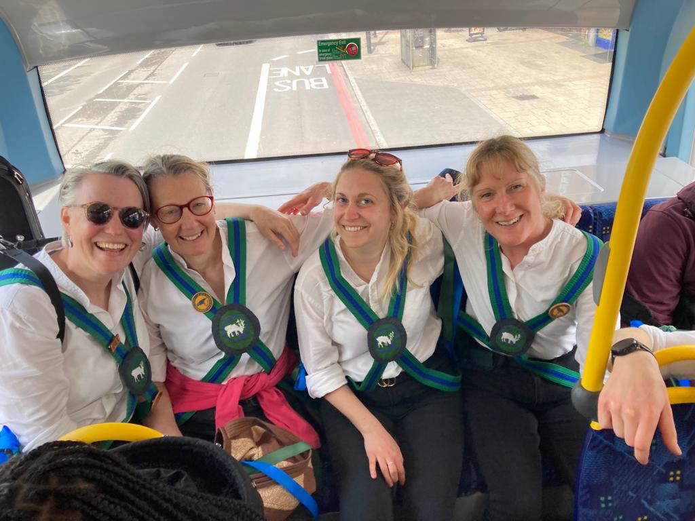

Our History
How Quaggy Morris Was Born
Nancy, Barry, Steph, Harry, Martha and Anna were sitting in a field. It was early May Folk Camp. Stilton and wine stoked thoughts to turn to the morris shaped hole in our lives. It was a chat incognito because Anna's partner has a phobia of morris dancing and was dead against it.
Barry had recently moved to Lee, South East London and had just folded his old side The Mad Hatters. He was ready for a new challenge and here was almost enough people to start a side.
We found the perfect place to practice - a dance floor above the social club in Lewisham Hospital - and began to learn the the basics, Adderbury. We had no musician initially (plenty of the dancers could play but we couldn't spare them!)
The Quaggy name was suggested by Martha as it was the local river running through Lewisham and there is a tradition for local sides being named after rivers (the Ravensbourne Morris Men, for example).
Quaggy Style...
Finding the right badge and kit design was the next challenge. Whilst endlessly searching images relating to the river Quaggy, Nancy stumbled on the modern day legend of the Lewisham Nature Man. Unique White Harts were popping up across the Borough on wastelands and on the Quaggy river walls. To this day, no-one knows who this fantastic artist is. During lockdown, a deer hunter made it their mission to find as many white harts and record them for posterity as several had already been covered over.
Nancy based the design for the badge on one of the white harts drinking from the River Quaggy. In the final design the white hart is set within a Q for Quaggy representing the river from which it drinks.
Once the initial badge had been hand embroidered, each member was set the task of embroidering their own badge based on the original design for the centre of their baldricks. A creative use of a judo belt formed the baldricks without the need for too much sewing.
As a mixed side we wanted to be able to have one kit that we could all wear. Having admired Crook Morris (a side from the lakes) in their black jean breaches and odd socks, the team set to create something along the same lines with odd socks in river blue and green.
Leather Bell pads were initially hand made by the dancers at a Quaggy workshop with bells recycled from special Barry contacts. A riveting night of hole punching it was.
Hazel sticks were researched to be perfect in form and sound and harvested from Nancy's parents' front garden.
Making It Happen
Lockdown could easily have permanently stopped us in our tracks. We'd been dancing for less than a year. But, we are a determined bunch and found ways to carry on. When allowed, we met together on Shooters Hill and practiced with super long bamboo sticks. A bit unwieldy they were too!
Covid saw the permanent closure of our first practice venue, and after lockdown we used St Lawrence church hall but were eventually won over by the newly renovated dance floor attached to the Fellowship Inn, Bellingham. Obviously, what better venue can you have for a Morris side especially when half price ale night happens to fall on practice night.
Meanwhile two of our side had needed to go and have babies and another do A-levels and two more dancers Siggy and Norma joined. A Melodeon player, Christine, was recruited from Selfolk and finally we were ready(ish) for our first dance out in June 22!